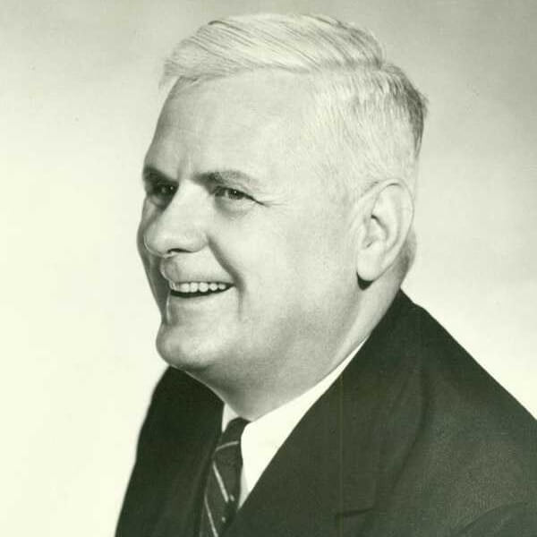
Lambda calculus was introduced by Alonzo Church in the 1930s as part of an investigation into the foundations of mathematics. Lambda calculus, also written as λ-calculus, is a formal system for function definition, function application and recursion. The portion of lambda calculus relevant to computation is now called the untyped lambda calculus. In both typed and untyped versions, ideas from lambda calculus have found application in the fields of logic, recursion theory (computability), and linguistics, and have played an important role in the development of the theory of programming languages (with untyped lambda calculus being the original inspiration for functional programming, in particular Lisp, and typed lambda calculi serving as the foundation for modern type systems).
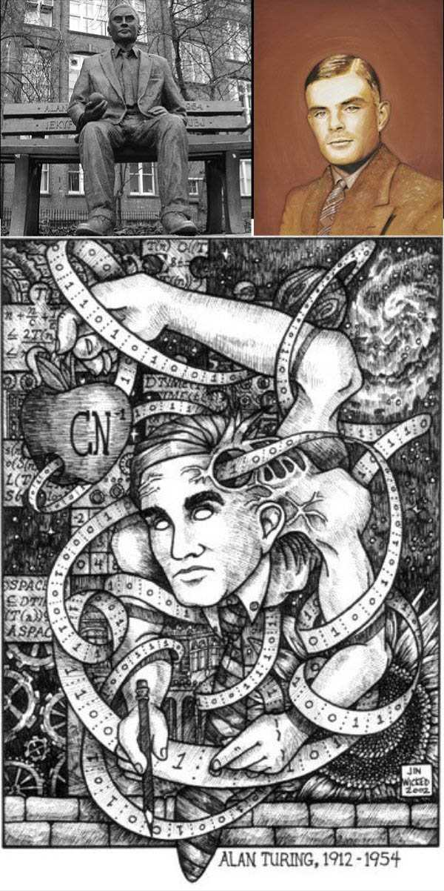
The Turing machine mathematically models a machine that mechanically operates on a tape. On this tape are symbols which the machine can read and write, one at a time, using a tape head. Operation is fully determined by a finite set of elementary instructions such as "in state 42, if the symbol seen is 0, write a 1; if the symbol seen is 1, shift to the right, and change into state 17; in state 17, if the symbol seen is 0, write a 1 and change to state 6;" etc.
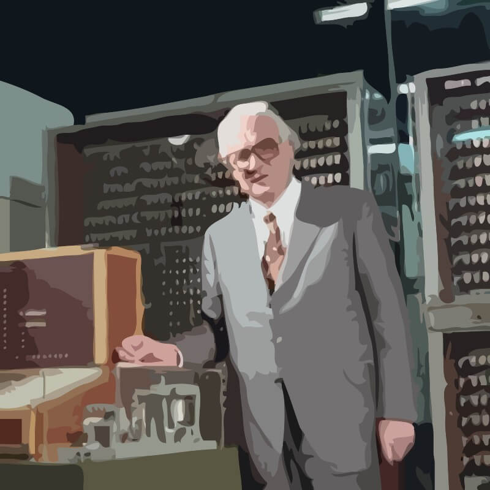
Plankalkül (German pronunciation: [ˈplaːnkalkyːl], "Plan Calculus") is a computer language designed for engineering purposes by Konrad Zuse between 1943 and 1945. It was the first high-level non-von Neumann programming language to be designed for a computer.
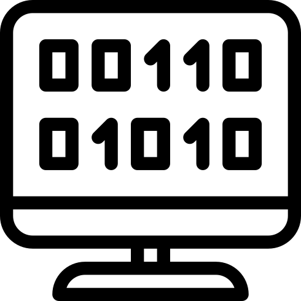
Machine code or machine language is a system of instructions and data executed directly by a computer's central processing unit. Machine code may be regarded as a primitive (and cumbersome) programming language or as the lowest-level representation of a compiled and/or assembled computer program. Programs in interpreted languages are not represented by machine code, however, their interpreter (which may be seen as a processor executing the higher level program) often is. Machine code is sometimes called native code when referring to platform-dependent parts of language features or libraries. Machine code should not be confused with so called "bytecode", which is executed by an interpreter.
An assembly language is a low-level programming language for computers, microprocessors, microcontrollers, and other programmable devices. It implements a symbolic representation of the machine codes and other constants needed to program a given CPU architecture. This representation is usually defined by the hardware manufacturer, and is based on mnemonics that symbolize processing steps (instructions), processor registers, memory locations, and other language features. An assembly language is thus specific to a certain physical (or virtual) computer architecture.
Typically a modern assembler creates object code by translating assembly instruction mnemonics into opcodes, and by resolving symbolic names for memory locations and other entities. The use of symbolic references is a key feature of assemblers, saving tedious calculations and manual address updates after program modifications. Most assemblers also include macro facilities for performing textual substitution—e.g., to generate common short sequences of instructions as inline, instead of called subroutines.
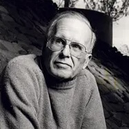
Fortran is a general-purpose, procedural, imperative programming language that is especially suited to numeric computation and scientific computing. Originally developed by IBM at their campus in south San Jose, California in the 1950s for scientific and engineering applications, Fortran came to dominate this area of programming early on and has been in continual use for over half a century in computationally intensive areas such as numerical weather prediction, finite element analysis, computational fluid dynamics, computational physics and computational chemistry. It is one of the most popular languages in the area of high-performance computing and is the language used for programs that benchmark and rank the world's fastest supercomputers.
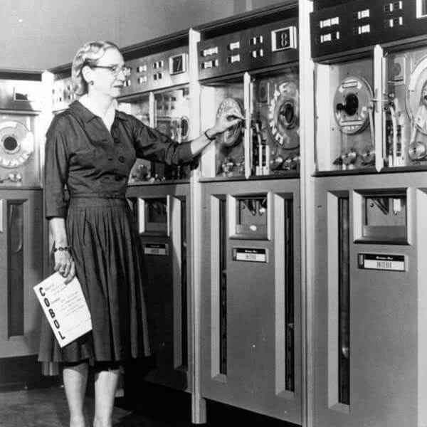
FLOW-MATIC, originally known as B-0 (Business Language version 0), was the first English-like data processing language.
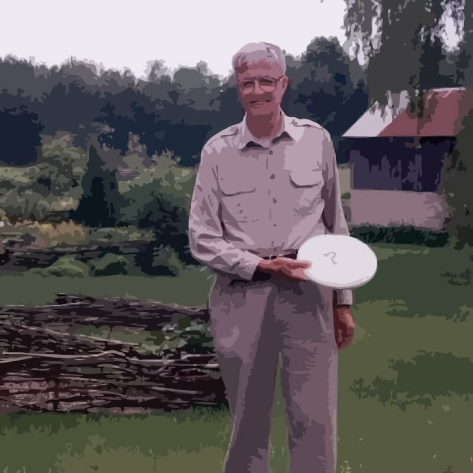
APL (named after the book A Programming Language) is an interactive array-oriented language and integrated development environment which is available from a number of commercial and non-commercial vendors and for most computer platforms.[
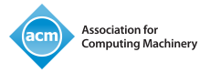
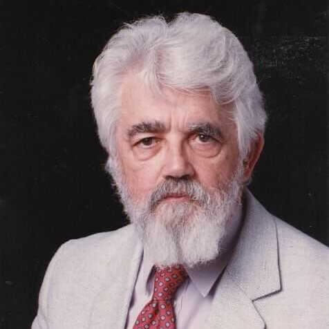
Lisp (or LISP) is a family of computer programming languages with a long history and a distinctive, fully parenthesized syntax. Originally specified in 1958, Lisp is the second-oldest high-level programming language in widespread use today; only Fortran is older (by one year). The name LISP derives from "LISt Processing"
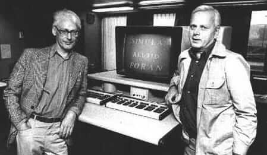
Simula is a name for two programming languages, Simula I and Simula 67, developed in the 1960s at the Norwegian Computing Center in Oslo, by Ole-Johan Dahl and Kristen Nygaard. Syntactically, it is a fairly faithful superset of ALGOL 60.
Simula 67 introduced objects, classes, 2 subclasses, virtual methods, coroutines, discrete event simulation, and features garbage collection.
Simula is considered the first object-oriented programming language. As its name implies, Simula was designed for doing simulations, and the needs of that domain provided the framework for many of the features of object-oriented languages today.
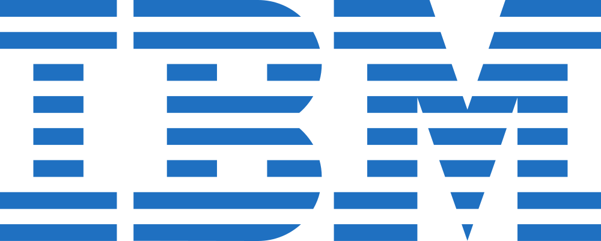
PL/I ("Programming Language One", pronounced "pee-el-one") is a procedural, imperative computer programming language designed for scientific, engineering, business and systems programming applications. It has been used by various academic, commercial and industrial organizations since it was introduced in the 1960s, and is actively used as of 2011.
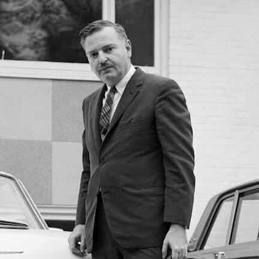
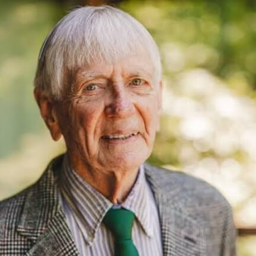
John George Kemeny (Hungarian: Kemény János György) (May 31, 1926 – December 26, 1992) was a Hungarian American mathematician, computer scientist, and educator best known for co-developing[1] the BASIC programming language in 1964 with Thomas E. Kurtz. Kemeny served as the 13th President of Dartmouth College from 1970 to 1981 and pioneered the use of computers in college education.
Thomas Eugene Kurtz (born February 22, 1928) is an American computer scientist who co-developed the BASIC programming language during 1963 to 1964, together with John G. Kemeny.
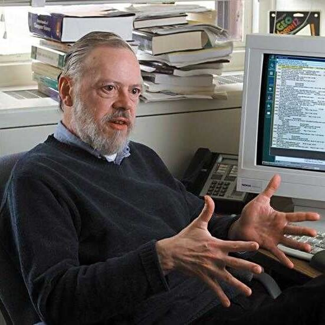
C is a general-purpose computer programming language developed between 1969 and 1973 by Dennis Ritchie at the Bell Telephone Laboratories for use with the Unix operating system. Although C was designed for implementing system software, it is also widely used for developing portable application software.
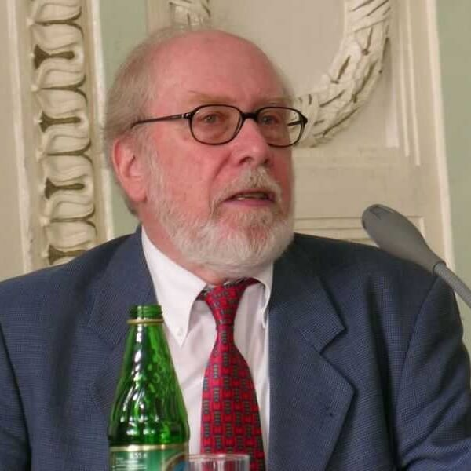
Pascal is an influential imperative and procedural programming language, designed in 1968/9 and published in 1970 by Niklaus Wirth as a small and efficient language intended to encourage good programming practices using structured programming and data structuring.
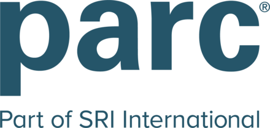
Smalltalk is an object-oriented, dynamically typed, reflective programming language. Smalltalk was created as the language to underpin the "new world" of computing exemplified by "human–computer symbiosis." It was designed and created in part for educational use, more so for constructionist learning, at the Learning Research Group (LRG) of Xerox PARC by Alan Kay, Dan Ingalls, Adele Goldberg, Ted Kaehler, Scott Wallace, and others during the 1970s.
Prolog is a general purpose logic programming language associated with artificial intelligence and computational linguistics.
Prolog has its roots in first-order logic, a formal logic, and unlike many other programming languages, Prolog is declarative: the program logic is expressed in terms of relations, represented as facts and rules. A computation is initiated by running a query over these relations.
Arthur John Robin Gorell Milner FRS FRSE (Robin Milner or A.J.R.G. Milner, born 13 January 1934 near Plymouth, died 20 March 2010 in Cambridge) was a prominent British computer scientist.
ML is a general-purpose functional programming language developed by Robin Milner and others in the early 1970s at the University of Edinburgh, whose syntax is inspired by ISWIM. Historically, ML stands for metalanguage: it was conceived to develop proof tactics in the LCF theorem prover (whose language, pplambda, a combination of the first-order predicate calculus and the simply typed polymorphic lambda calculus, had ML as its metalanguage). It is known for its use of the Hindley–Milner type inference algorithm, which can automatically infer the types of most expressions without requiring explicit type annotations.
Ada is a structured, statically typed, imperative, wide-spectrum, and object-oriented high-level computer programming language, extended from Pascal and other languages.
Ada was originally designed by a team led by Jean Ichbiah of CII Honeywell Bull under contract to the United States Department of Defense (DoD) from 1977 to 1983 to supersede the hundreds of programming languages then used by the DoD.
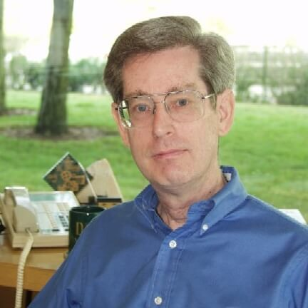
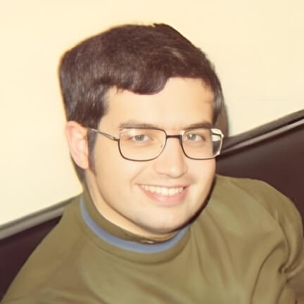
SQL (officially /ˈɛs kjuː ˈɛl/, often /ˌsiːkwəl/; often referred to as Structured Query Language) is a programming language designed for managing data in relational database management systems (RDBMS).
SQL was developed at IBM by Donald D. Chamberlin and Raymond F. Boyce in the early 1970s. This version, initially called SEQUEL (Structured English Query Language), was designed to manipulate and retrieve data stored in IBM's original quasi-relational database management system, System R, which a group at IBM San Jose Research Laboratory had developed during the 1970s. The acronym SEQUEL was later changed to SQL because "SEQUEL" was a trademark of the UK-based Hawker Siddeley aircraft company.
C++ (pronounced "cee plus plus") is a statically typed, free-form, multi-paradigm, compiled, general-purpose programming language. It is regarded as an intermediate-level language, as it comprises a combination of both high-level and low-level language features. It was developed by Bjarne Stroustrup starting in 1979 at Bell Labs as an enhancement to the C language. Originally named C with Classes, the language was later renamed C++ in 1983.
Objective-C is a reflective, object-oriented programming language that adds Smalltalk-style messaging to the C programming language. It was created primarily by Brad Cox and Tom Love in the early 1980s at their company Stepstone. Both had been introduced to Smalltalk while at ITT Corporation's Programming Technology Center in 1981.
Perl is a high-level, general-purpose, interpreted, dynamic programming language. Perl was originally developed by Larry Wall in 1987 as a general-purpose Unix scripting language to make report processing easier.
Python is a general-purpose, high-level programming language whose design philosophy emphasizes code readability. Python claims to "[combine] remarkable power with very clear syntax", and its standard library is large and comprehensive. Its use of indentation for block delimiters is unique among popular programming languages.
Ruby is a dynamic, reflective, general-purpose object-oriented programming language that combines syntax inspired by Perl with Smalltalk-like features. Ruby originated in Japan during the mid-1990s and was first developed and designed by Yukihiro "Matz" Matsumoto. It was influenced primarily by Perl, Smalltalk, Eiffel, and Lisp.
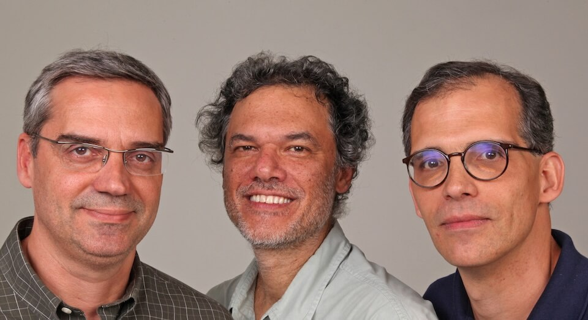
Lua ( /ˈluːə/ loo-ə; from Portuguese: lua meaning "moon") is a lightweight multi-paradigm programming language designed as a scripting language with extensible semantics as a primary goal. Lua has a relatively simple C API compared to other scripting languages.
PHP is a general-purpose server-side scripting language originally designed for web development to produce dynamic web pages. For this purpose, PHP code is embedded into the HTML source document and interpreted by a web server with a PHP processor module, which generates the web page document.
Java is a programming language originally developed by James Gosling at Sun Microsystems (which is now a subsidiary of Oracle Corporation) and released in 1995 as a core component of Sun Microsystems' Java platform. The language derives much of its syntax from C and C++ but has a simpler object model and fewer low-level facilities. Java applications are typically compiled to bytecode (class file) that can run on any Java Virtual Machine (JVM) regardless of computer architecture. Java is a general-purpose, concurrent, class-based, object-oriented language that is specifically designed to have as few implementation dependencies as possible. It is intended to let application developers "write once, run anywhere."
JavaScript is a prototype-based scripting language that is dynamic, weakly typed and has first-class functions. It is a multi-paradigm language, supporting object-oriented, imperative, and functional programming styles.
JavaScript was formalized in the ECMAScript language standard and is primarily used in the form of client-side JavaScript, implemented as part of a Web browser in order to provide enhanced user interfaces and dynamic websites. This enables programmatic access to computational objects within a host environment.
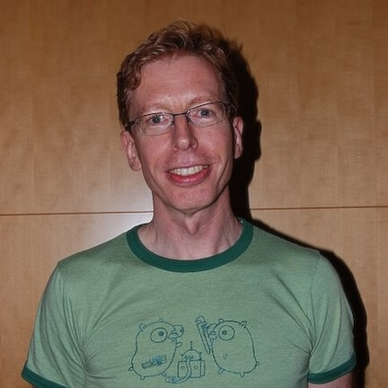
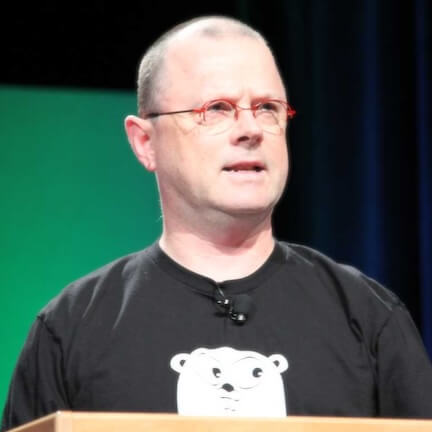
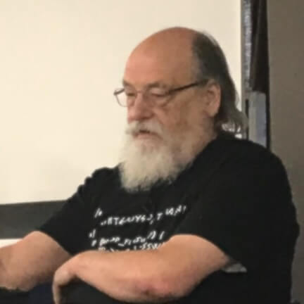
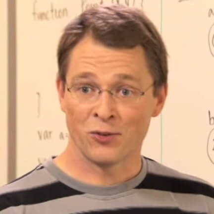
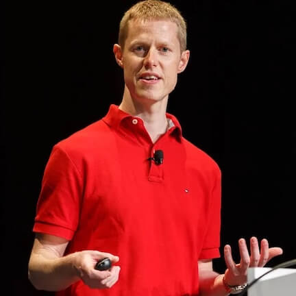
Dart is an object-oriented, class-based, garbage-collected language with C-style syntax. It can compile to machine code, JavaScript, or WebAssembly. It supports interfaces, mixins, abstract classes, reified generics and type inference.
Elixir runs on the Erlang VM, known for creating low-latency, distributed, and fault-tolerant systems. These capabilities and Elixir tooling allow developers to be productive in several domains, such as web development, embedded software, machine learning, data pipelines, and multimedia processing, across a wide range of industries.
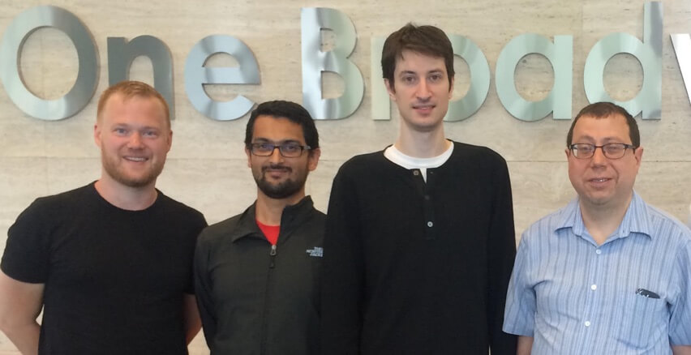
sThe goals of V include ease of use, readability, and maintainability.